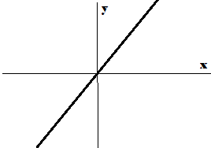
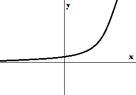

Overview
This section is meant to be a brief summary of each of the concepts I will go through. If you don't understand the explanation, because they can be a bit confusing, that's fine. I'm trying to cram in as much info as possible into small paragraphs. More thourough explanations will come later. :)
Real Numbers
Real numbers are, as you probably could've guessed, numbers that exist. (wow how insightfull) What this means is that rational numbers, which are numbers that can be written as fractions, are real numbers, but so are irrational numbers like pi and the square root of 2.
Equations and Inequalities
You have probably heard of F = ma in science class. F = ma is an equation which states that Force (F) is equal to mass (m) times acceleration (a). We can use equations to model things more efficiently, like with F = ma. Since in an equation, both sides are equal, if you were to add 1 to both sides, they would still be equal. (if F = ma then F+1 = ma+1) This fact can be very usefull for a few reasons. Lets say that you are going to a party, since you are super fancy you decide to get five jars of cookies. But the number of cookies isn't on the packaging. Your friend happens to bring one of the same jars plus some boxes (boxes together contain 36 total cookies.) from the same brand. (I know this is really specific, just bear with me here)
By sheer miricle and blessing of the dumb math equations Leprachaun, the combined weights written on each package (both jars and boxes) for each of you is the same. (Since they are the same brand, this supposedly means the total number of cookies is the same). Point is, you two want to make sure you have enough cookies for the party. Neither of you will open the packages since you aren't sociopaths.
You can get past this oddly specific conundrum by realising that since you and your friend have the same number of cookies total, you can write an equation to represent the screnario:
5 jars = 1 jar + 36 cookies
If you subtract off 1 jar from both of you (you still physically have the cookies, don't worry)
4 jars = 36 cookies
If you divide both sides of the equation by 4
1 jar = 9 cookies
A pretty dissapointing result, but atleast you now know that the jars are a rip-off.
Inequalities are the same as equations but instead of =, you have less than (<) and greater than (>)
So you don't know the exact weights of either, you just know that the 1 jar and 36 cookies is less than the 4 jars.
All of the same tricks work. (with some caviots).
Polynomials
footnote (I have a foot sticking out of my head): at the moment, don't worry about the usefullness of polynomials, just know that they are pretty funky. (also just as a reminder, an expression is an equation that doesn't have an equal sign. ex: instead of 1+1 = 2 it's just 1+1)
If you have a variable x, or j to be consistant, you can imagine all powers of j: j2, j3
or maybe j302984
A polynomial is an expression with any number of terms. Each term being xjn (some number times j to the power of some number)
For example, 2j2 + j is a polynomial and so is 5j3 + 3j + 4 (since j0 will always be 1, "constant terms" which don't have j are allowed)
When graphing a non-linear polynomial, the graph forms a sort of U type shape.

The exponent of the highest exponent term is the "degree" of the polynomial.
(ex: 3j4 + 2j3 + j + 27 would be a 4th degree polynomial since the highest exponent term is 3j4)
In mathy terms: A polynomial of degree n is (ajn + bjn-1 + ... + yj1 + zj0)
I know that's alot, and it's probably a little confusing as to why this matters or is a thing at all. But the reason we care about polynomials in the real world is usually less because of polynomials and is more related to the interactions between them.
For example, lets say you own a small (or monopopolistic, your choice) buisness that sells cookies, (in jars, for consistancy) and you want to estimate how much money you will make in some amount of time from now. You can represent the amount of money you will make as (how many you sell*Price of cookie jars).
Lets say you have already sold 100 jars and consistantly sell 20 jars per day. And because of inflation, you need to increase your prices, which currently sit at $5 per jar, by 0.05 per day. (exaggerated and simplified for math purposes) you can model this scenario with the following expression when d = time in days.
(20d + 100)(0.05d + 5)
^ ^ ^ ^
^ 100 sold ^ $5 starting price
^ Inflation
20 per day
(notice how both halves of the expression are polynomials)
If we multiply this out, we get d2 + 105d + 500 (which is also a polynomial)
So you can now use this new equation to model the money you make over d days.
Functions
Functions serve a function, woopdiedoo wow. You may remember from last year that a function, in dictionary terms, is an equation in which any input has exactly one output. y = 2x is a function in which you input a number x and get out exactly twice that number y. Typically, functions are written as f(x) = instead of y = so that it's more clear that it's refering to a function that is acting on x instead of some other variable y. (f is the most common letter but it doesn't matter) Functions can be graphed just like equations can.
Linear
Linear functions are functions that have no funky buisness going on.
The graph of a linear function should be a straight line.
Each time you go up by one, the value increases by a constant
A linear equation can be represented as f(x) = mx + b which you likely recognise.

Exponential
An exponential function is a function that increases exponentially wowee.
Each time you go up by one, the value is multiplied by a constant.
For example, after every day, the population of rabbits doubles (is multiplied by 2).
The graph of an exponential function looks like a curve that spikes upwards indefinitally.
An exponential function can be represented as f(x) = a(bx) + k

Quadratic
A quadratic function is a degree 2 polynomial function.
Each time you go up by one the value goes up by a value that increases by a constant (don't worry about it if that makes 0 sense)
The graph of a quadratic function should form a U shape (or an upsidown U)
Quadratic functions are represented as f(x) = ax2 + bx + c
Sequences
Sequences are pretty simple in concept. If you have 5 cookies and every minute you magically gain 1 cookie, then the number of cookies, gn, that you have after n minutes can be written as 1n + 5 since you start with 5 cookies and gain 1 each minute.
That's nothing new, we know this already from functions. That's because what I just showed you (gn = 1n + 5) is an explicit sequence.
When you think of the word "sequence" on it's own, you probably think of lists or patterns. For example, [4, 6, 8, 10]. You can tell me that that list starts at 4 and increases by 2 each time.
And you could tell me that the 5th item in the list would be twelve because the 4th item (10) + 2 is 12.
You can say that each item in the sequence is 2 more than the previous item. If you know the first Item is 4, you can write this out as:
gn = gn-1 + 2
Again, all this is saying is that the nth item in the sequence, gn, is the previous item, gn-1, plus 2.
And knowing this about the sequence, you can construct an explicit formula for the nth term in the sequence. For our list, the 1st element of the sequence is a 4 and it goes up by two each time. If we go from the 1st element to the "0th" element, instead of adding two, we can subtract two. This gets us from 4 to 2. Assuming you remember slope intersept form (y = mx + b) we can now write an equation for the sequence. The y int (0th element) is 2 and the slope is also 2. So the explicit form of the sequence is gn = 2x + 2
Quadratic
Quadratics
Quadratics are a doozy so It will be a bit till I get this explanation down. I'd rather focus on the in depth explanations for everything else. Quadratics are fourth quarter anyway so I should have the time for that.